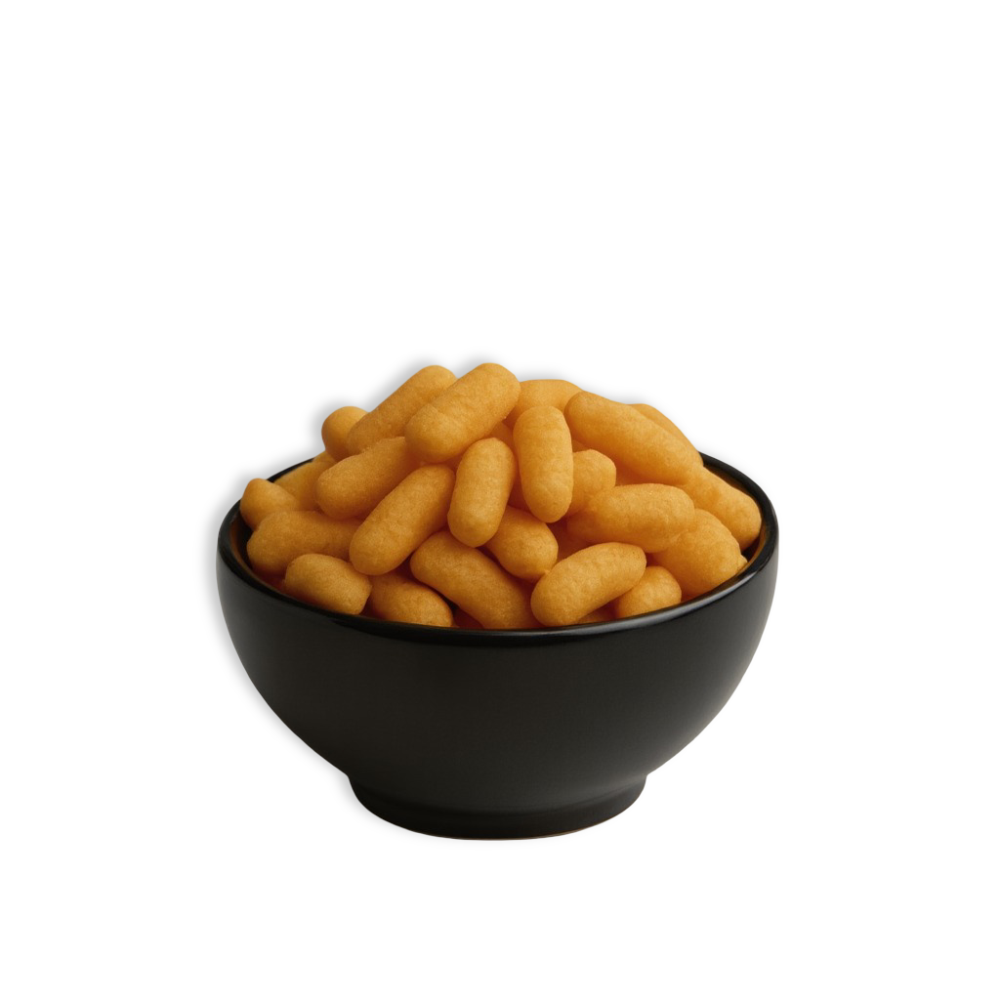

Wholesome millet snacks made with clean, natural ingredients.
Dilmure brings great taste, clean ingredients, and everyday trust all in one snack. Our millet-based puffs are light, flavor-forward, and consistently better than regular junk.

Dilmure was born from the nostalgia of India's favorite crunchy snack, reimagined for today. We wanted childhood comfort with cleaner, millet-based, guilt-free goodness.